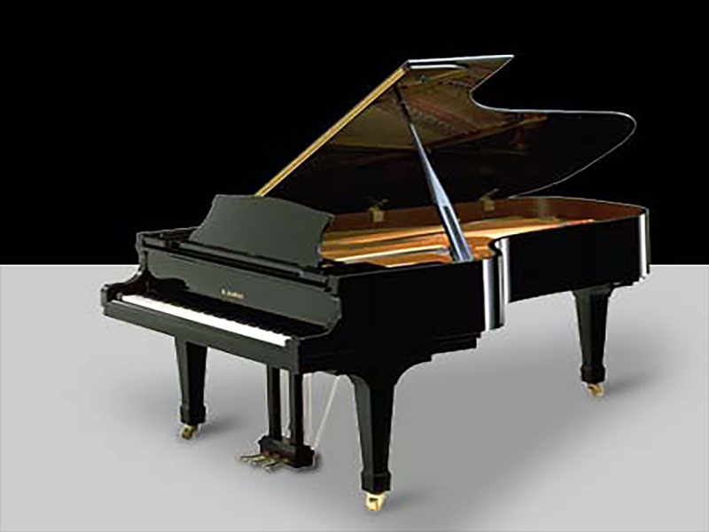
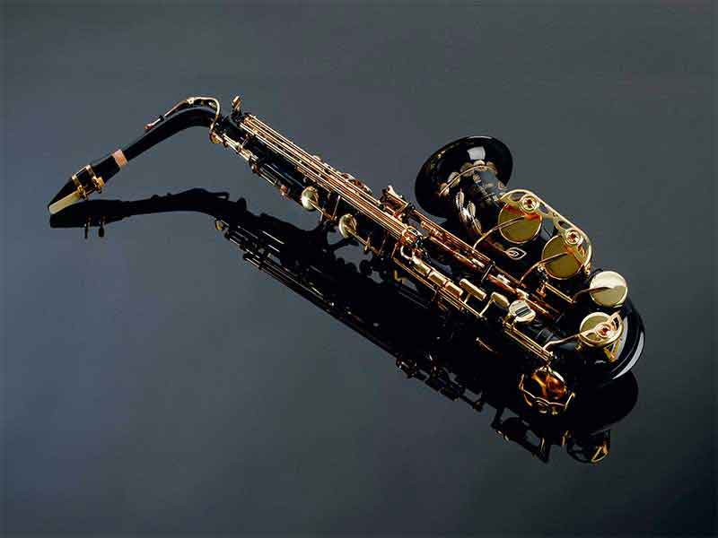
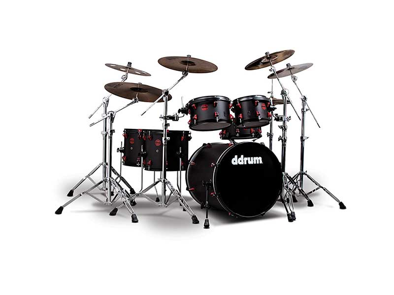

Piano
GRADE: 8
Theory of Music
GRADE: 7
Western vocals
GRADE: 6
Speech and Drama
GRADE: 6

Alto Saxophone
GRADE: 5
Flute
GRADE: 3

Aashna is a passionate musician who has achieved best grades at a very young age. She plays the Piano, Flute, Saxophone, Drums, Guitar and the Violin. She was awarded The Student of the year twice by her school and the Student of the year in Music several times. In 2012, Aashna was the state No.1 in Piano. She also received a scholarship in piano. Aashna is preparing for her diploma in piano and also preparing for 8th grade in saxophone. She is also attending a music production course in Logic Pro X. Her interests include travelling, cartooning, photography and drama.